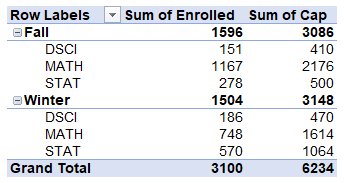
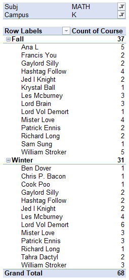

Chapter 2 Getting Started with Pivot Tables
2.1 Data Requirements
Before creating a pivot table, it is crucial to ensure that your data meets certain requirements. These requirements include:
- Data Format: Data must be organized in a tabular format, with each column representing a specific variable and each row containing a unique record.
- Column Headers: Ensure that your data have unique column headers. These headers will be used as field names in the pivot table.
- Consistent Data Types: Each column has a consistent data types. For example, numeric columns should contain only numbers, date columns should contain only dates, and text columns should contain only text values. Inconsistent data types may lead to incorrect calculations or unexpected results in the pivot table.
- No Blank Cells: Blank cells can disrupt the calculations performed by the pivot table and may result in inaccurate summaries. Therefore, blank cells need to be removed or imputed.
2.2 Preparing the Data
To ensure that your data is ready for pivot table analysis, consider the following preparation steps:
- Data Cleaning: Clean the data by removing any duplicates, correcting errors, and handling missing values. This process enhances the accuracy and reliability of the analysis performed by the pivot table.
- Data Consolidation: If your data is scattered across multiple worksheets, consolidate it into a single location. This ensures that all relevant data is included in the analysis.
- Data Transformation: Depending on your analysis objectives, you may need to transform your data before creating a pivot table. For example, you might want to convert text values to numerical values or split a single column into multiple columns.
2.3 Creating a Pivot Table in Excel
Excel provides a user-friendly interface for creating pivot tables. Follow these steps to create a pivot table:
Step 1: Select your Data Range: Highlight the range of cells that contain your data, including the column headers.
Step 2: Insert a Pivot Table: Navigate to the “Insert” tab in the Excel ribbon and click on the “PivotTable” button. This will open the “Create PivotTable” dialog box.
Step 3: Choose the Data Source: In the “Create PivotTable” dialog box, verify that the “Select a table or range” option is selected. Ensure that the correct data range is displayed in the “Table/Range” field. If your data range includes column headers, Excel will automatically detect them.
Step 4: Select the Pivot Table Destination: Choose where you want to place the pivot table. You can either select an existing worksheet or create a new worksheet. Once you’ve made your selection, click “OK.”
Step 5: Design the Pivot Table: Excel will open a new worksheet or insert a pivot table within an existing worksheet. On the right side of the Excel window, you will see the “PivotTable Fields” pane. This pane displays a list of all the fields (columns) from your data range.
2.4 A Pivot Table Example
Download the file “PivotTableData1” from here. Do this by clicking on the file “PivotTableData1.xlsx”, then click “View raw” to download the dataset.
This dataset gives enrollment statistics for various classes in Mathematics, Statistics and Data Science.
We will recreate the pivot table seen below.

- Begin by highlighting the data.
- Under “Insert”, click “Pivot Table”.
- Verify the settings in the pivot table dialogue box are what you want. In this case, the defaults are fine. Click “OK”.
- Drag the “Term” field under “Rows”.
- Drag the “Subj” field under “Rows”.
- Drag the “Enrolled” field under “Values”.
- Drag the “Cap” field under “Values”.
Notice that the “columns” area automatically adds a “sum Values” field. So, in this case, we are adding up the enrollments and capacity from the classes in the various subject areas.
2.5 Pivot Table Layout and Structure
Once you have created a pivot table in Excel, it is important to understand its layout and structure. A pivot table consists of several key elements that allow you to organize, summarize, and analyze your data effectively.
PivotTable Fields Pane: The PivotTable Fields pane is located on the right side of the Excel window when a pivot table is active. It displays a list of all the fields (columns) from your data range. The fields are categorized into four sections: Filters, Columns, Rows, and Values.
- Filters: The fields placed in the Filters section allow you to filter the data displayed in the pivot table based on specific criteria. You can select or deselect values in the filter drop-down to focus on specific subsets of data.
- Columns: The fields placed in the Columns section determine the arrangement of data in the columns of the pivot table. Each unique value in the column field(s) creates a separate column in the pivot table.
- Rows: The fields placed in the Rows section determine the arrangement of data in the rows of the pivot table. Each unique value in the row field(s) creates a separate row in the pivot table.
- Values: The fields placed in the Values section contain the data that is summarized and displayed within the pivot table. These values are typically numeric or measurable data, such as sales figures, quantities, or percentages. You can apply various aggregation functions to the value field(s), such as sum, average, count, etc., to calculate summary statistics.
PivotTable Field List: The PivotTable Field List is a floating window that appears when you click inside the pivot table. It provides a more detailed view of the fields and allows you to make changes to the pivot table structure. You can drag and drop fields between the Filters, Columns, Rows, and Values sections to modify the layout and analysis perspective of the pivot table.
PivotTable Tools: When you click inside the pivot table, a new tab called “PivotTable Tools” appears in the Excel ribbon. This tab contains two sub-tabs: Analyze and Design. These tabs provide additional options and functionalities to customize and enhance the pivot table.
- Analyze Tab: The Analyze tab allows you to modify the pivot table layout, apply different calculations, sort and filter data, and format the pivot table. It provides tools for refreshing the data, changing the pivot table layout, adding calculated fields, and more.
- Design Tab: The Design tab offers various customization options to change the appearance and style of the pivot table. You can choose from different predefined pivot table styles, modify field settings, add subtotals and grand totals, and format the pivot table with different themes, colors, and fonts.
Pivot Table Cells: The main body of the pivot table consists of cells that display the summarized data. Each cell represents the intersection of a row field and a column field. The values in these cells are calculated based on the aggregation function applied to the value field(s). You can also apply conditional formatting to highlight specific data patterns or set up data bars, color scales, or icon sets to visualize the data within the cells.
Drill-Down and Expand/Collapse: One of the powerful features of pivot tables is the ability to drill down into the data and expand or collapse the levels of detail. By double-clicking a cell in the pivot table, you can access the underlying data that makes up that specific value. Additionally, you can expand or collapse the row or column field headers to show or hide the detailed data for specific categories or groups.
Understanding the layout and structure of a pivot table allows you to manipulate and analyze data efficiently. By utilizing the PivotTable Fields pane, PivotTable Field List, PivotTable Tools, and various customization options, you can create dynamic and insightful pivot tables to derive meaningful insights from your data.
2.6 Another Example
Download the file “PivotTableData1” from here. Do this by clicking on the file “PivotTableData1.xlsx”, then click “View raw” to download the dataset.
This dataset gives enrollment statistics for various classes in Mathematics, Statistics and Data Science.
We will recreate the pivot table seen below.

- Begin by highlighting the data.
- Under “Insert”, click “Pivot Table”.
- Verify the settings in the pivot table dialogue box are what you want. In this case, the defaults are fine. Click “OK”.
- Drag the “Term” field under “Rows”.
- Drag the “Instructor” field under “Rows”.
- Drag the “Subj” field under “Filters”.
- Drag the “Campus” field under “Filters”.
- Drag the “Course” field under “Values”.
Now, we have a count of how many courses each instructor teaches. In the pivot table, click on the “Subj” filter and select “MATH”. Click on the “Campus” filter and select “K”. This filters the list to instructors who teach classes in MATH at campus K.